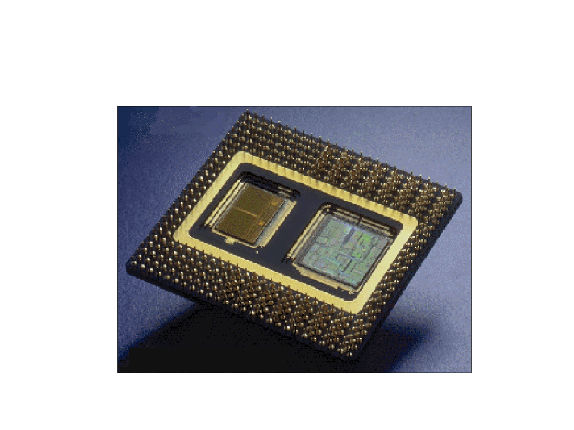
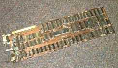

The 1960s saw large mainframe computers become much more common in large industries and with the US military and space program. IBM became the unquestioned market leader in selling these large, expensive, error-prone, and very hard to use machines. A veritable explosion of personal computers occurred in the early 1970s, starting with Steve Jobs and Steve Wozniak exhibiting the first Apple II at the First West Coast Computer Faire in San Francisco. The Apple II boasted built-in BASIC programming language, color graphics, and a 4100 character memory for only $1298. Programs and data could be stored on an everyday audio-cassette recorder. Before the end of the fair, Wozniak and Jobs had secured 300 orders for the Apple II and from there Apple just took off. Also introduced in 1977 was the TRS-80. This was a home computer manufactured by Tandy Radio Shack. In its second incarnation, the TRS-80 Model II, came complete with a 64,000 character memory and a disk drive to store programs and data on. At this time, only Apple and TRS had machines with disk drives. With the introduction of the disk drive, personal computer applications took off as a floppy disk was a most convenient publishing medium for distribution of software. IBM, which up to this time had been producing mainframes and minicomputers for medium to large-sized businesses, decided that it had to get into the act and started working on the Acorn, which would later be called the IBM PC. The PC was the first computer designed for the home market which would feature modular design so that pieces could easily be added to the architecture. Most of the components, surprisingly, came from outside of IBM, since building it with IBM parts would have cost too much for the home computer market. When it was introduced, the PC came with a 16,000 character memory, keyboard from an IBM electric typewriter, and a connection for tape cassette player for $1265. By 1984, Apple and IBM had come out with new models. Apple released the first generation Macintosh, which was the first computer to come with a graphical user interface(GUI) and a mouse. The GUI made the machine much more attractive to home computer users because it was easy to use. Sales of the Macintosh soared like nothing ever seen before. IBM was hot on Apple's tail and released the 286-AT, which with applications like Lotus 1-2-3, a spreadsheet, and Microsoft Word, quickly became the favourite of business concerns. That brings us up to about ten years ago. Now people have their own personal graphics workstations and powerful home computers. The average computer a person might have in their home is more powerful by several orders of magnitude than a machine like ENIAC. The computer revolution has been the fastest growing technology in man's history.
| Silicon Chip | Circuit Board |
|  |  |